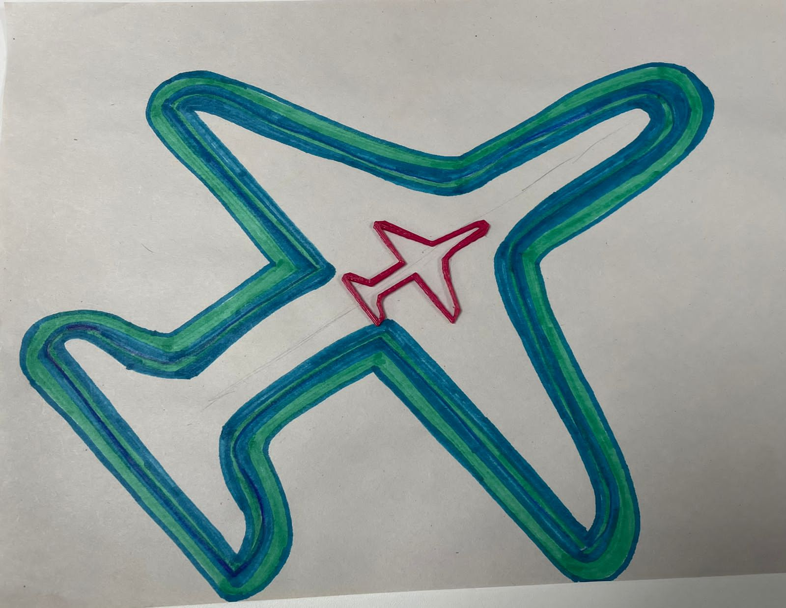
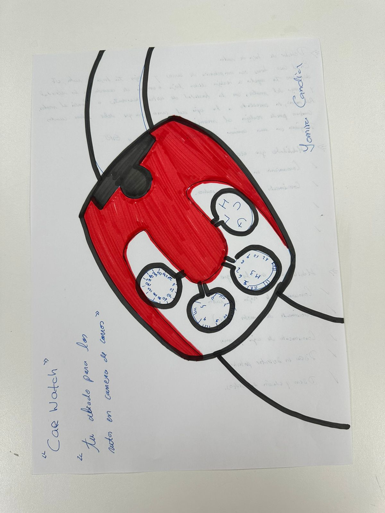

ABOUT ME
ABOUT ME
|
Soy Yomira Candia 😄 Estudio marketing y publicidad. Soy muy creativa y cuento con un gran espíritu emprendedor. Me apasiona viajar, la música, los autos y disfrutar de un buen café mientras diseño estrategias publicitarias. Uno de mis objetivo es impactar el mundo a través de la innovación, generando tendencias para que las marcas logren sus objetivos. |
|
|  |
Impresión 3D Avión ✈ En clase decidimos diseñar un avión para la impresión 3d, la decisión se estableció porque todos nos gusta viajar, conocer nuevos lugares y generar nuevas experiencias. Nos gustó mucho ver el proceso de la impresión y como se imprimia nuestro boceto. Al final creemos que quedó bien jajaja. |
|  |
Reloj para carreras⌚ Es un reloj que va conectado al carro de competencia. Este reloj te ayuda a realizar la hoja de ruta y te corrige si de acuerdo a la velocidad en la que estás manejando. Por ejm: Hay una curva en forma de U y el humano pone en su hoja de ruta que es “frenado 3 en U” Sin embargo, ese dato está mal porque si estás yendo a mucha velocidad tiene que ser un 1 de velocidad y no 3. En este momento se activa CarWatch y te corrige con el fin de evitar accidentes e incluso muertes en una competencia de carro. |